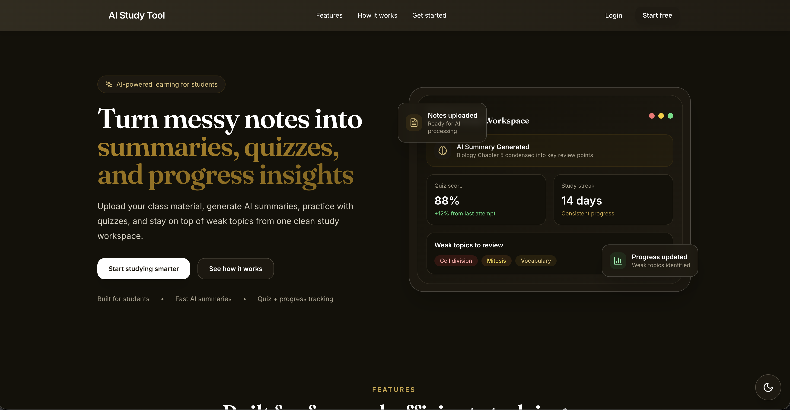
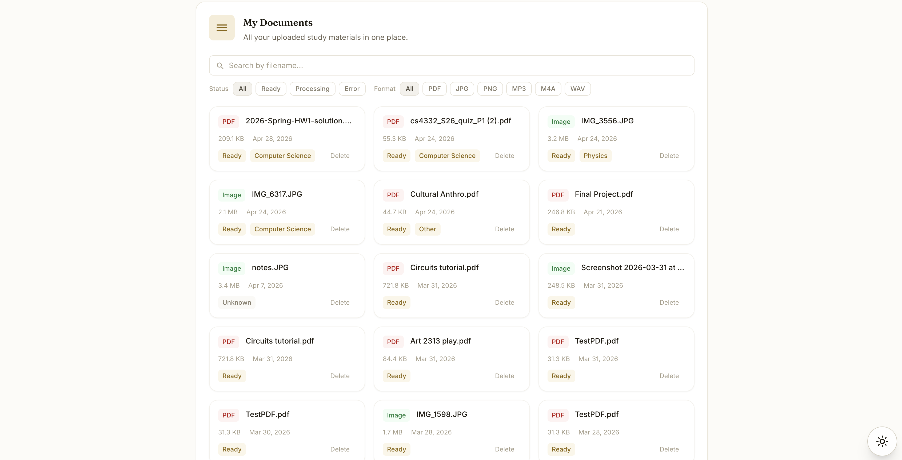
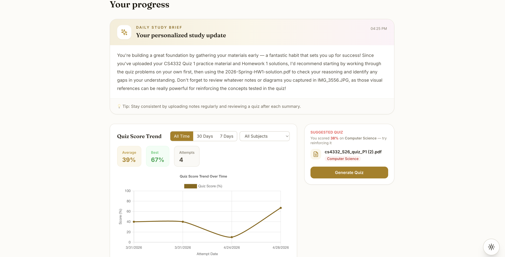
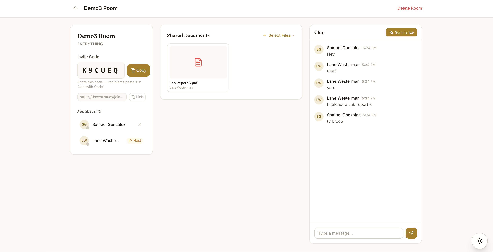
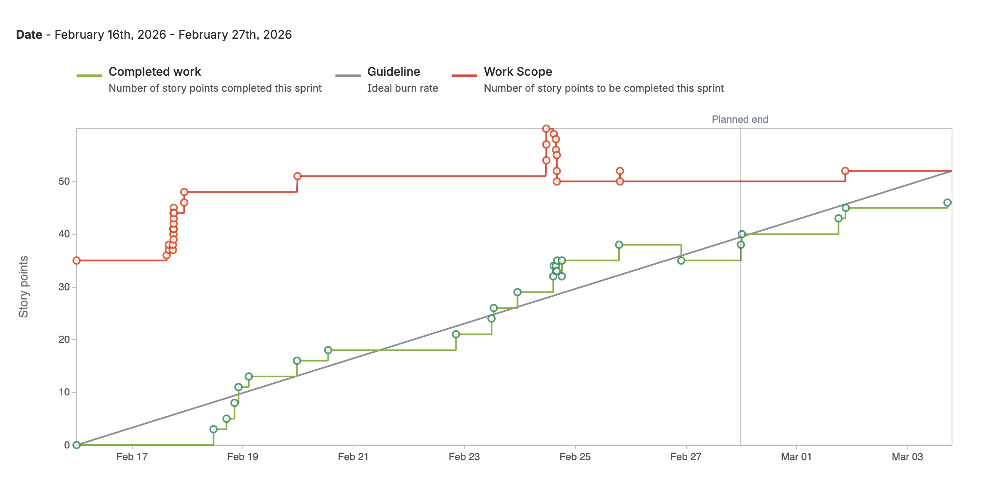
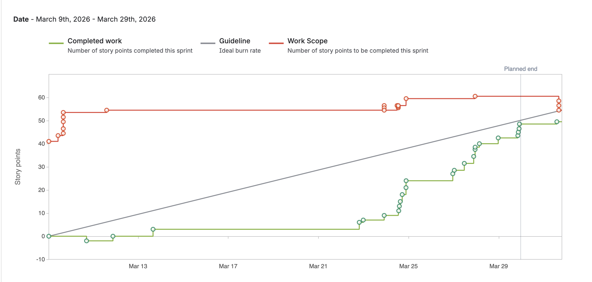

Docent is an AI tutor that answers from your course materials, lecture slides, handwritten notes, and assigned readings, rather than whatever it can find on the open web. Five of us built it over two sprints across 3 months. I owned the document ingestion pipeline: the path every file travels between a student dropping it into the browser and the AI being able to answer questions from it. This involved file uploads, text extraction, chunking, embedding, and semantic search.
Sprint 1 — getting files into the system. I built the React upload interface and the Flask API behind it, wired up Firebase Storage, and implemented PDF text extraction with chunking. This is where much of the retrieval quality gets decided, since chunks that split mid-thought return useless context. Extracted text was embedded through the OpenAI API and stored in Qdrant for semantic search.
Sprint 2 — handwritten notes, and trusting the input. I integrated the Google Vision API so students could photograph handwritten notes into the same pipeline. OCR on handwriting is unreliable, and a bad transcription contaminates every answer later drawn from it, so I built an editable review UI letting students correct the extracted text before it gets embedded. I also added error handling across each stage, so a failed extraction relays a clear message rather than an empty document.





